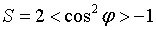
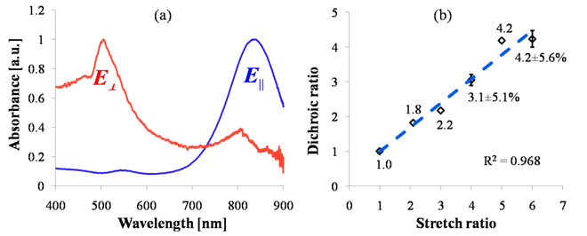

International Journal of Theoretical and Applied Nanotechnology (IJTAN)
ISSN: 1929-1248

Volume 1, Issue 2, Year 2013 - Pages 26-29
DOI: 10.11159/ijtan.2013.003
Improved Alignment of Gold Nanorods Embedded in Polymer Films
Stefan Stoenescu¹, Muthukumaran Packirisamy¹, Vo-Van Truong²
¹Dept. of Mechanical Engineering, Concordia University, EV 4.219, 1515 St. Catherine West, Montreal, QC, Canada H3G 2W1
s_stoene@encs.concordia.ca; muthukumaran@sympatico.ca
²Dept. of Physics, Concordia University, Loyola Science Complex, 7141 Sherbrooke West, Montreal, QC, Canada H4B 1R6
truong.vo-van@concordia.ca
Abstract - The multiple applications of gold nanorods (AuNRs) are most effective if the longitudinal surface plasmon resonance (SPR) can be simultaneously excited in all the involved AuNRs. This can be achieved in well aligned ensembles of AuNRs, obtained by stretching AuNR-polymer composite films, as a possible method. One of the difficulties encountered in applying this method, is the thermal reshaping of the rods, which would change their optical properties. To mitigate this risk, while increasing the plastic deformability of the film, a polymer of high molecular weight mixed with a small amount of plasticizer was chosen as the composite matrix. The resulting composite films could be stretched up to seven times their initial length. To quantify the alignment of the rods, the average orientation angle was calculated based on scanning electron micrographs. An orientational order parameter of 0.92 was found, as compared to 1, which is the parameter value corresponding to perfect alignment. The anisotropy of the composite film was tested in linearly polarized light.
Keywords: Aligned gold nanorods, surface plasmon resonance, orientational order parameter, optical anisotropy.
© Copyright 2015 Authors This is an Open Access article published under the Creative Commons Attribution License terms. Unrestricted use, distribution, and reproduction in any medium are permitted, provided the original work is properly cited.
Date Received: 2013-09-06
Date Accepted: 2013-12-06
Date Published: 2013-12-30
1. Introduction
Metal nanoparticles (NPs) can have their conduction electrons resonantly and coherently excited by the electric field of an incident light beam that provides the exact energy necessary to atomic jump to excited energy states. This phenomenon is known as localized surface plasmon resonance (LSPR), [1, 2] as opposed to the propagating surface plasmon resonance (SPR) [3, 4] of the conduction electrons at a flat metal-dielectric interface. In optically anisotropic nanoparticles (NPs), such as nanorods (NRs), of dimensions much smaller than the wavelength of the incident lightwave, two modes of such resonant oscillation are possible. Depending on their direction of oscillation, these modes can be longitudinal or perpendicular with respect to the longitudinal axis of symmetry of the NRs. Out of the two LSPR modes, the longitudinal one is adjustable over a larger range and is therefore most useful and in demand.
Devices based on ensembles of misaligned rods have averaged out optical properties and are thus characterized by diminished sensitivity to polarized light and function less efficiently. On the other side, devices containing fully aligned rods can reach maximal efficiencies and for this reason, several methods of alignment of the rods have been studied [5, 6, 7].
Rod alignment by film stretching is one of these methods. It consists in embedding the AuNRs in a film of thermoplastic polymer that is subsequently heated up to its softening temperature. By simultaneously subjecting the film to tensile stress, a sufficiently large elongation can be obtained. In this process, the nanorods in contact with the polymer chains get entrained and reach a final orientational position parallel with the direction of stretching. It results that the degree of alignment of the rods is directly proportional to the stretch ratio of the film and therefore, the highest possible stretch ratio was attempted in this work. This was achieved by slightly modifying the composition of the composite matrix in order to improve its plastic deformability. A stretching device was also designed in order to reduce the risk of film fracture. Finally, the alignment of the AuNRs was assessed qualitatively by scanning electron microscopy (SEM) and quantified by calculating an average orientation angle and an orientational order parameter.
2. Improving the Plastic Deformability
The matrix of this type of composite film is usually chosen to consist of polyvinyl alcohol (PVA) because this polymer can be drawn into thin and transparent films. This is due to its thermoplastic properties, which makes that it softens when heated up to its glass transition temperature Tg (85°C) and flows under tensile stress. If PVA is cooled back to room temperature, it regains its hardness in a reversible cycle. This is possible because its molecules consist of many thousands of carbon atoms bound together by single and strong covalent bonds, which form long linear chains with rotational, bending and twisting flexibility in three dimensions [8]. Therefore, a well-stirred PVA aqueous solution with well dispersed AuNRs may reach a highly entangled state of its chains. If the mixture is allowed to dry, it will solidify in this state, forming a film. By heating up the film while simultaneously applying a slowly increasing stretching force, the secondary bonding forces between chains will be broken, allowing them to disentangle. Eventually, the polymer chains will be straightened out with their axes oriented along the stretching direction and the rods aligned parallelly to the stretch direction, as well.
Thus, matrix polymers of longer molecular chains allow for higher film stretch ratios because the relative displacement of the chains is possible along longer distances. However, the higher molecular weights of such polymers also have higher glass transition temperature. But heating up to this temperature is limited by the risk of thermal reshaping of the rods with altered optical properties as a consequence [1, 9]. In order to depress the softening temperature, a small amount of glycerol as plasticizer was mixed in the polymer solution. The selection of glycerol was based on a study [10] that found that it was one the plasticizers most compatible with PVA.
Subsequently, the transparency of the glycerol-PVA films was tested in the visible-NIR range and it was found to have been well maintained. This verification was necessary in order to insure that the optical excitation of the embedded AuNRs would not be obstructed.
Finally, films with glycerol of 2% and 4% mass percent concentration of PVA were tested and all could be stretched up to a ratio of seven. However, because one undesired side effect of the plasticizer is that the solidified film is less rigid, the optimal concentration of glycerol was chosen such as to insure that the resulting film could maintain a flat enough surface over a long period of time, after stretching.
Previous reports have indicated that a stretch ratio of four to six would be sufficient for a perfect alignment [11]. In order to insure the best possible alignment of AuNRs embedded in the composite film, we aimed in this work for a stretch ratio of seven.
3. Experimental
Completely hydrolyzed PVA 146,000-186,000 MW, glycerol G9012 (≥ 99.50%) and gold nanorods 716812 (diam. × L 10 nm × 38 nm +/- 10%) were all purchased from Sigma-Aldrich and used as received. A volume of 11 ml of AuNR solution of concentration 35μg/ml was used for forming of a composite film.
A mass of 2.04 g PVA granules was gradually mixed in 20 ml distilled and deionized water and slowly heated up to about 95°C under stirring, until a clear and transparent 10% PVA solution was obtained. After the solution cooled down to about 35°C, 32μl glycerol (2% of the PVA mass), was dropped into the PVA solution under stirring for an additional 30 minutes. The solution was subsequently degassed. Finally, 3.0 g of the above PVA-glycerol water solution was poured into a 50 ml beaker and 11 ml of the 35 μg/ml AuNRs colloidal solution was added, well stirred and sonicated for about 30 minutes. The AuNR-PVA solution was subsequently cast into a 60 x 60 mm2 flat mold and allowed to solidify for 48 hrs at room temperature. The film was afterwards kept in an oven at 40°C temperature for 24 hrs to make sure it was completely dry. After having peeled it off, the film was cut into 20 by 30 mm rectangular strips. The strips were then clamped into the stretching device and gradually stretched under heating at about 65°C.
Absorbance spectra were obtained using a Perkin Lambda 650 spectrophotometer, in the visible - NIR region. Micrographs were taken with the JEOL JSM840 scanning electron microscope.
3.1. Morphological Characterization
The average orientation angle of the rod ensemble contained in a film strip was calculated based on dimensional data of more than 160 rods collected from several SEM micrographs. We show one such micrograph in the panel (a) of Figure 1. In order to define the orientational angle of the rods, we show a few typical ones schematically depicted by golden rectangles, randomly oriented and zoomed-up in Figure 1.
The stretch ratio "Rs" was defined as the ratio: Rs = Lf / L0 where we denoted the initial and final length, by L0 and Lf, respectively. The film strip is stretched along the s - s' direction, represented by the double headed arrow. The longitudinal elongation is associated with a transversal contraction, caused by the Poisson effect. The orientation of the rods was measured by the angle "φ", defined between the long axis of the rod and the stretch direction s – s', as indicated in Figure 1.
The resulting sample mean was of φavg = 3.5° with a standard deviation of σ = 11.05°.
A two-dimensional orientational order parameter defined as  [6, 12] was found with a value of S = 0.92. This compares well to the value of S = 1, which is the value of the parameter corresponding to the perfect alignment of the rods.
3.2. Optical Characterization
A plane polarized lightwavewith the electric field parallel (E||) with the stretch direction s'-s incidenton the composite film, is strongly absorbed at the longitudinal wavelength and a minimal radiation energy is allowed to pass through the film, as seen in panel (a) of Figure 2. If the electric field of the lightwave is perpendicular E┴ to s - s', then the lightwave energy is transmitted unabated through the film. Therefore, the composite film has the same optical properties as a dichroic polarizer with the transmission axis perpendicular to the stretch direction.

Figure 2. (a) Normalized absorbance spectra of uniaxially tretched AuNR-PVA film illuminated by plane polarized light with the electric field parallel (E||) and perpendicular (E┴) to the s' – s direction. (b) Linear trend of the dichroic ratio dependence on the stretch ratio.
The above statement holds for the ideal case of perfectly aligned AuNRs embedded in a composite film. In reality however, a small absorbance peak can still be noticed located at the wavelength of the transverse SPR, in panel (a), for light polarized parallel with the stretch direction. Similarly, a small absorbance peak is seen to persist at the longitudinal SPR wavelength, for light polarized perpendicular to the stretch direction. This demonstrates the existence of a large enough number of AuNRs that could not be aligned during the stretching process. These peaks would not exist in a perfectly aligned ensemble of rods.
The polarization performance of the composite film can be characterized by the dichroic ratio, defined as the ratio of the absorbance intensities for plane polarized light with the electric field parallel and perpendicular to s'- s. The dependence of the dichroic ratio on the stretch ratio is shown in panel (b) of Figure 2. The trend line fitted to the experimental data suggests that the dichroic ratio depends linearly on the stretch ratio.
4. Conclusions
In this work, a thermoplastic polymer (PVA) of high molecular weight, mixed with a small amount of plasticizer (glycerol) was used as matrix material for making AuNRs – composite films. Using a stretching device designed to avoid factors promoting the fracture of the composite film, a stretch ratio of seven was possible.
The resulting alignment of the AuNRs was quantified by calculating an average orientational angle of 3.5° and a two-dimensional orientational order parameter of S = 0.92, which is 8% off the value of a perfectly aligned ensemble.
The AuNRs-PVA composite film was shown to behave like a dichroic polarizer with the transmission axis perpendicular to the stretch direction. A trendline fitted to the measured dichroic ratio suggests a linear proportionality between its dichroic ratio and the stretch ratio.<
The dichroic properties of the film can be useful in applications for imaging, nonlinear optics, thermal therapy or data encoding.
Acknowledgements
We wish to warmly thank Nicole A. MacDonald, physicist with Le Centre de Caractérisation Microscopique des Matériaux, Montreal, for her skillful and dedicated efforts in taking the SEM images of the embedded nanorods.
We also wish to thank the Engineering Design and Manufacturing Laboratories of the Mechanical and Industrial Engineering department at Concordia University, Montreal, for the professional advice and fabrication of the stretching device.
References
[1] J. Perez-Juste, B. Rodriguez-Gonzalez, P. Mulvaney, L.M. Liz-Marzan "Optical control and patterning of gold-nanorods-poly(vinyl alcohol) films", Advanced Functional Materials, 2005, 15, 1065-1071. View Article
[2] K.A. Willets and R. P. Van Duyne "Localized Surface Plasmon Resonance Spectroscopy and Sensing", Annual Reviews of Physical Chemistry, 2007, 8:267–97. View Article
[3] C. F. Bohren, D.R. Huffman "Absorption and Scattering of Light by Small Particles", 1983, John Wiley & Sons, Inc. View Article
[4] U. Kreibig, M. Vollmer "Optical properties of metal clusters", 1995, Springer-Verlag Berlin Heidelberg. View Book
[5] B. M. I. van der Zande, G.J.M Koper and H.N.W Lekkerkerker "Alignment of Rod-Shaped Gold Particles by Electric Fields", Journal of Physical Chemistry. B, 1999, 103, 5754-5760.View Article
[6] Z. Hu, M.D. Fischbein, C. Guerner and M. Drndic "Electric-Field-Driven Accumulation and Alignment of CdSe and CdTe Nanorods in Nanoscale Devices", Nano Letters, 2006, 6, 11, 2585-2591 View Article
[7] A.J. Mieszawska, G.W. Slawinski and F.P. Zamborini "Directing the Growth of Highly Aligned Gold Nanorods through a Surface Chemical Amidation Reaction" Journal of the American Chemical Society, 2006, 128, 5622-5623. View Article
[8] W.D. Callister, D.G. Rethwisch "Materials Science and Engineering - An Introduction", 2010, John Wiley & Sons, Inc.
[9] Y. Liu, E.N. Mills, R.J. Composto "Tuning optical properties of gold nanorods in polymer films through thermal reshaping" Journal of Materials Chemistry, 2009, 19, 2704–2709. View Article
[10] C.A. Finch "Polyvinyl alcohol, properties and applications" Journal of Polymer Science: Polymer Letters Edition, 2003, 12, 2, 105-106, Wiley, New York. View Article
[11] B.M.I. van der Zande, L. Pages, R.A.M. Hikmet, A. van Blaaderen, "Optical Properties of Aligned Rod-Shaped Gold Particles Dispersed in Poly(vinyl alcohol) Films", Journal of Physical Chemistry B, 1999, 103, 5761-5767. View Article
[12] W. Ahmed, E.S. Kooij, A. van Silfhout and B. Poelsema "Quantitative Analysis of Gold Nanorod Alignment after Electric Field-Assisted Deposition", Nano Letters, 2009, 9, 11, 3786-3794. View Article